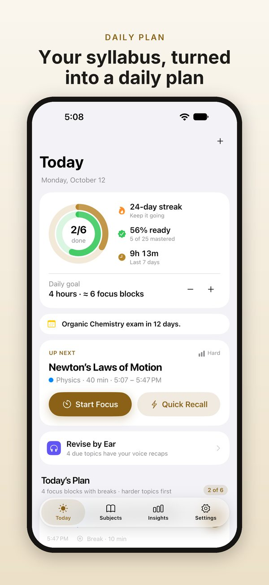
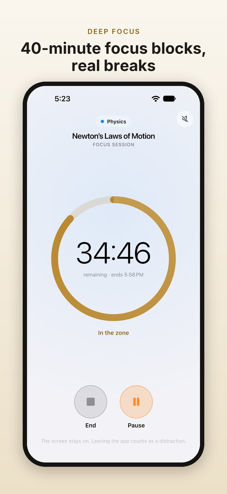
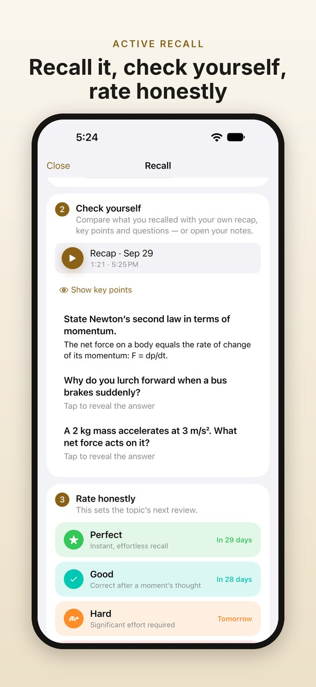
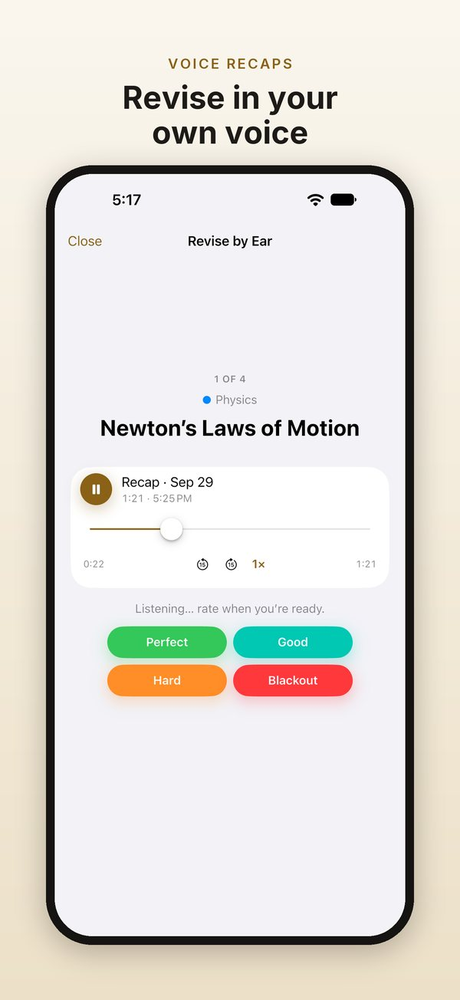
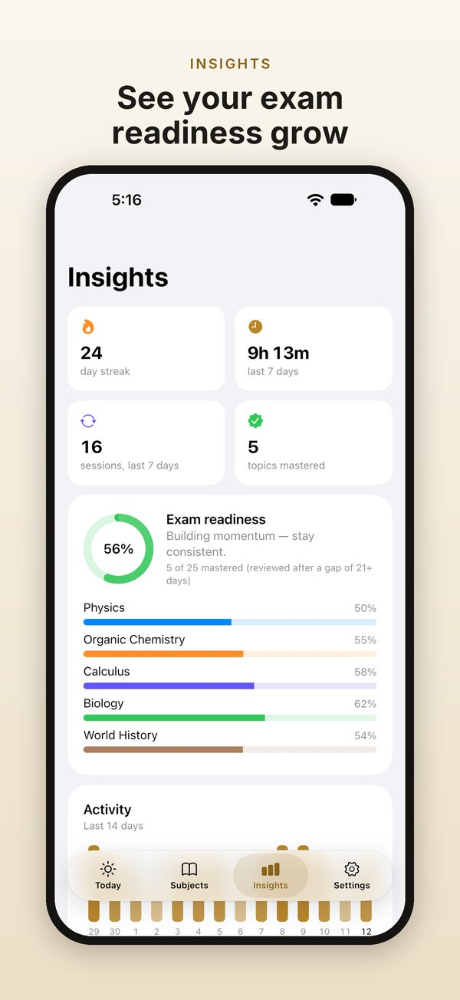

A daily plan
Add subjects, exam dates and topics: type them, paste a list or scan a book’s contents page. Today plans 40-minute focus blocks with 10-minute breaks, hardest topics first.
StudyMaster turns your syllabus into a calm daily plan and brings each topic back just before you’d forget it. For iPhone, iPad, Mac and Android.
StudyMaster Pro is required: monthly or yearly, each with a 7-day free trial for new subscribers, or a one-time Lifetime purchase.





Add subjects, exam dates and topics: type them, paste a list or scan a book’s contents page. Today plans 40-minute focus blocks with 10-minute breaks, hardest topics first.
The timer keeps time even if you leave the app. Brown, pink or white noise, made on your device, fades out before the end chime.
After each block, recall the topic out loud or record yourself. Check your key points and questions, then rate it. Each rating shows when the topic comes back.
Explain a topic in your own words and keep the recording. Revise by Ear shows a topic, gives you a moment to think, then plays your own explanation.
Your streak, exam readiness by subject, a 12-week consistency calendar and a two-week review forecast.
No ads, no account, no tracking. Your study data and voice recordings stay on your device. Back everything up to one file whenever you like.
Home Screen quick actions, and a Start Focus Block action for Siri, Shortcuts and Focus automations.
A sidebar for your subjects, keyboard shortcuts, and layouts for every window size.
A full menu bar and keyboard shortcuts. Drop a photo of a contents page onto Add Topics.
Optional Do Not Disturb during blocks, home-screen shortcuts, and layouts for phones, foldables and tablets.
Add a subject with its exam date and priority, then add its topics. Type them, paste a list, or scan a book's contents page; on Mac, drag a photo of the page onto Add Topics. Then open Today. Your plan is ready as 40-minute focus blocks with 10-minute breaks. Start the first block, and when it ends, StudyMaster takes you through recall and rating.
Every topic has its own review schedule. After you study a topic, you rate how well you recalled it: Perfect, Good, Hard or Blackout. Each button shows when you'll see the topic again. Topics you know well come back after longer gaps; topics you find hard come back sooner. Today lists what's due, hardest and highest-priority topics first. Tapped the wrong rating? You can undo it.
A focus block is 40 minutes of study, followed by a 10-minute break. The timer keeps time even if you leave the app. You can add brown, pink or white noise, generated on your device, which fades out before the end chime. When the block ends, you recall the topic and rate it. If you're overdoing it, Insights give you a gentle warning.
Key points keep the essentials of a topic together: formulas, definitions and mnemonics. Questions are prompts you answer from memory before you reveal the answer. After a focus block, you check your recall against your recap, key points and questions, then rate the topic.
A voice recap is you explaining a topic in your own words, recorded for up to 10 minutes. Play it back at 0.75× to 2×, with 15-second skips. The microphone is used only while you record. Recordings stay on your device, and StudyMaster never uploads them. A recording goes elsewhere only if you share it, send a backup file somewhere, or your device's own backup includes it. Android's backup to your Google account leaves recordings out.
Revise by Ear uses your voice recaps for review. StudyMaster shows you a topic and gives you a short think time to recall it. Then it plays your own explanation, so you can check yourself and rate the topic. You can also listen to a whole subject's recaps back to back.
Use Export Backup to save everything, voice recaps included, to a single file. Keep it where you like: Files, a folder on your Mac, a cloud drive you choose, or a message to yourself. On the new device, install StudyMaster and use Import Backup to open that file. StudyMaster has no account and no servers, so this file is how your study moves with you. Your device's own backup can also include StudyMaster's data.
On Android, yes. Turn on Silence notifications during focus blocks and allow it in system settings. StudyMaster switches its own Do Not Disturb mode on while a block runs, and off when it ends. Alarms and calls from starred contacts still come through. On iPhone and iPad it works the other way round: a Focus automation can start your next block. On Apple devices, end-of-block alerts are Time Sensitive, so your Focus can let them through.
You can get a morning plan and an evening check-in at times you choose, exam countdown reminders a week and a day before each exam, and an optional Sunday recap of your week. StudyMaster also alerts you when a focus block ends and reminds you before a free trial ends. All of these are scheduled on your device. On Android, allow alarms and reminders so the end-of-block alert arrives on time.
StudyMaster requires StudyMaster Pro. Choose monthly or yearly, each with a 7-day free trial if you haven't subscribed before, or a one-time Lifetime purchase. The app and the store page show the price for your country before you confirm. Payment is taken when the free trial ends, and subscriptions renew automatically until you cancel. StudyMaster reminds you before your trial ends. On iPhone, iPad and Mac, one purchase covers all three.
StudyMaster has no account. It asks the App Store or Google Play whether you have an active subscription or a Lifetime purchase. Sign in to the store with the account you bought with, then tap Restore Purchases in Settings or on the subscription screen. One purchase covers iPhone, iPad and Mac. Android is purchased separately on Google Play, and the two don't unlock each other. StudyMaster remembers your Pro status, so it keeps working offline for a while.
On iPhone, iPad or Mac, cancel in your Apple Account settings at least 24 hours before the end of the current period, or the subscription renews automatically. On Android, cancel in Google Play › Payments & subscriptions. A free trial works the same way: payment is taken when it ends unless you cancel in time, and StudyMaster reminds you before it ends. Lifetime is a one-time purchase, so there's nothing to cancel.
StudyMaster 2.0 is a complete rebuild, and the ads are gone. When you update, your subjects, topics and history come across automatically; the import happens on your device. If you subscribed to Pro in an earlier version, your subscription keeps working. If not, StudyMaster now requires Pro: monthly or yearly with a 7-day free trial if you haven't subscribed before, or a one-time Lifetime purchase. StudyMaster for iPhone, iPad and Mac is purchased separately on the App Store.
We receive no data about you or how you use StudyMaster. There are no ads, no account, no tracking and no analytics. Your study data and voice recordings are stored on your device, and we have no servers that hold them. Scanned pages are read on your device. On Android, Google's text-recognition component may send Google technical diagnostics, such as device model and error codes. Apple or Google handles payments; we never see your billing details.
In the app, go to Settings › Contact Support. It starts an email with the app version in the subject line. Or write to wekstuff@gmail.com. It helps to say which device you use and what happened. We use your email only to reply to you, and we don't add you to any mailing list.
In the app, go to Settings › Contact Support: it starts an email with the app version filled in. Or write to wekstuff@gmail.com. Tell us which device you use and what happened.
Your email is used only to reply to you.